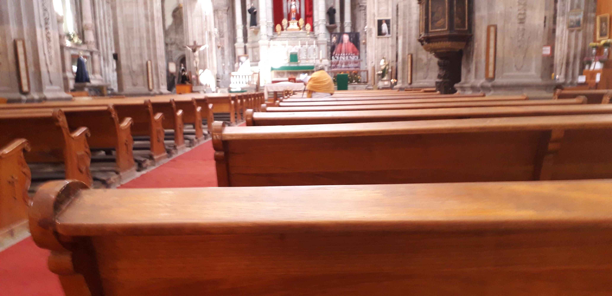
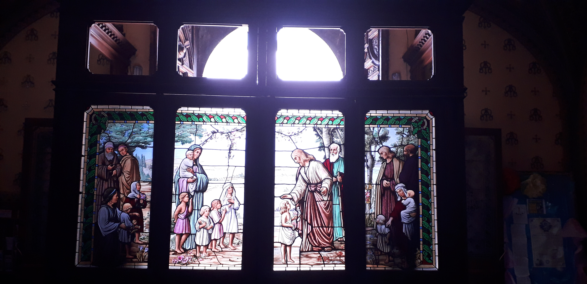
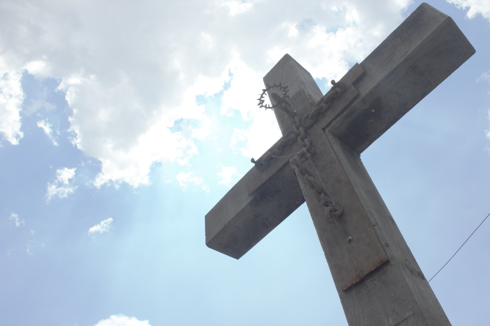

Al servicio del Reino de Dios
... caminemos juntos en comunidad

Parroquia de Nuestra Señora del Patrocinio, Guanajuato
- 1er y 3er Sábado de cada mes
- (Sólo se debe asistir un Sábado)
- INSCRIPCIONES: Miércoles y Jueves| 9:30-14:00 y 16:30-18:30
- CATEQUESIS: Sábado 17:00 - 20:00
- TEL: 473 733 1484

Basílica de Nuestra Señora de Guanajuato
- Todas las semanas
- (Se debe asistir los 3 días)
- INSCRIPCIONES: Miércoles de 9:00 - 13:00
- CATEQUESIS: Miér, Jueves y Viernes| 19:00 - 21:00
- TEL: 473 732 0314

Parroquia del Inmaculado Corazón de María (Belén)
- Cada 15 días
- (Se debe asisitir los 2 días)
- CATEQUESIS: Martes y Miércoles| 18:00 - 20:00
- TEL: 473 732 2283

Parroquia de la Madre Santísima de la Luz (Pueblito de Rocha)
- Cada 15 días
- (Se debe asisitir los 2 días)
- INSCRIPCIONES: Lunes 17:30 (de la semana de catequesis)
- CATEQUESIS: Lunes y Martes| 18:00 - 20:00
- TEL: 473 732 9437

Parroquia de San Jośe y Santiago (Marfil)
- 2da y 4ta semana del mes
- (Se debe asisitir los 3 días)
- CATEQUESIS: Lunes, Martes y Miér| 18:00 - 19:00
- TEL: 473 733 1097

Parroquia de Santa Fe de Guadalupe (La Sauceda)
- 1er y 3er semana del mes
- (Se debe asisitir los 3 días)
- CATEQUESIS: Miér, Jueves y Viernes| 19:00 - 20:00
- Los primeros 3 domingos del mes
- (Se debe asisitir los 3 domingos)
- CATEQUESIS: Domingo de 10:00 - 11:00
- TEL: 473 733 1097